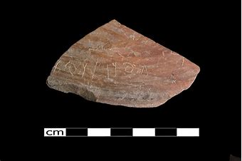

"the only mention of Goliath the Philistine outside the Bible"
“圣经之外唯一提到非利士人歌利亚”
The area known as Tell es-Safi has long been suspected as being the biblical Gath mentioned in the Bible. Gath, home to Goliath and his brothers (1 Samuel 17:4), is one of five Philistine cities (1 Samuel 6:17) including Ashkelon, Gaza, Ashdod, and, Ekron. The site is all but confirmed as biblical Gath beginning in the 1990s and continuing with present-day excavations under the direction of Bar-Ilan University’s professor of archaeology Aren Maeir.
Though there is no skeletal evidence yet of giants like Goliath, the buildings unearthed are huge and may suggest a “city of giants.” Of interesting significance is an Indo-European inscription (ALWT, WLT), etymologically close to the name of Goliath as it appears in the Hebrew text. If this is a reference to THE Goliath mentioned in the Bible, then this would be the only reference to the giant outside of the Bible. This would be significant as this would indicate another confirmation of a biblical personality from archaeology.
被称为 Tell es-Safi 的地区长期以来一直被怀疑是圣经中提到的圣经 Gath。 加特是歌利亚和他的兄弟们的故乡（撒母耳记上 17:4），是五个非利士城市之一（撒母耳记上 6:17），包括亚实基伦、加沙、亚实突和以革伦。 从 1990 年代开始，该遗址几乎被确认为圣经中的 Gath，并在巴伊兰大学考古学教授 Aren Maeir 的指导下继续进行当今的挖掘工作。
虽然目前还没有像歌利亚这样的巨人的骨骼证据，但出土的建筑物非常巨大，可能暗示着一座“巨人之城”。 一个有趣的意义是印欧语铭文（ALWT，WLT），在词源上与希伯来文本中出现的歌利亚的名字很接近。 如果这是对圣经中提到的歌利亚的引用，那么这将是圣经之外唯一对巨人的引用。 这将很重要，因为这将表明考古学对圣经人格的另一种确认。
